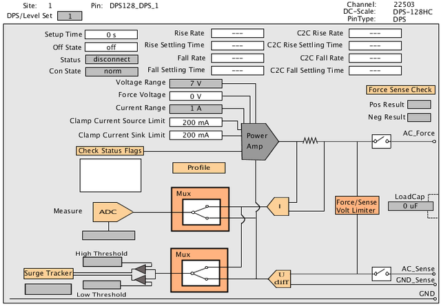

Hardware view diagram of DC Scale channels in DPS operating mode
The figure shows an example schematic as displayed in the Hardware View for DC Scale channels in DPS operating mode. Site number, pin name, and channel number appear at the top of the Hardware View.
The hardware view is interactive. For example, to open the DPS Measurement window click ADC, and to open the Force/Sense Line Check window click Force Sense Check.

Functional changes
- Introduced before SmarTest 6.3.2